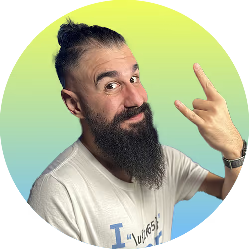

Descubre el equipo de profesionales de Conquerblocks
Conquer Blocks es la mayor academia de programación en habla hispana, y la que cuenta con mayores garantías de empleo. Aquí podrás aprender sobre Desarrollo Full-Stack, Desarrollo Blockchain, Inteligencia Artificial y Ciberseguridad. Fórmate con profesionales de la élite del desarrollo con amplia experiencia en el mercado laboral.
|  |

|
||
Bienvenido Sáez |
Brais Moure |
Elena Hernández |
Carlos Azaustre |
Programador especializado |
Ingeniero Informático |
Doctora en Astrofísica Computacional |
Ingeniero telemático |
|
Bienvenido cuenta con más de 15 años de experiencia en el mundo de la educación, especialmente enseñando HTML, CSS, Javascript y Django. |
Ha trabajado en grandes empresas del sector como Inditex, Indra o Altia. Ocupando mis 3 últimos años, antes de establecerme como freelance, como Arquitecto de Software. Divulgador sobre tecnología y programación |
Profesora de Python, se ha dedicado a enseñar programación en la Universidad a personas que, como tú, partían de 0, y será la que te enseñe tu primer lenguaje de programación. |
Está reconocido por Google desde 2019 como Developer Expert GDE en Tecnologías web y premiado en 2022 y 2023 como Microsoft MVP (Most Valuable Professional). |